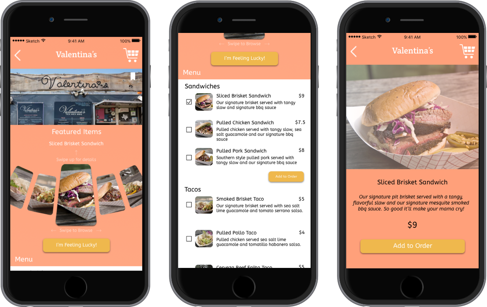

PayCrave
PayCrave is an app I designed and developed with a simple goal: enhance the user experience for the food truck industry. PayCrave gives users an easy way to find food trucks, where they can order and pay ahead-of-time to reduce wait time for lines and enjoy their food quicker, thereby enhancing the overall food truck experience.
The Problem
Users were not satisfied with the current available ways to find food trucks, a unilateral payment system, and a large pain point for users was the wait time to get their food once they did find trucks.
The Solution
The solution was to create an app where users could very simply find food trucks, pay for their order ahead of time, and eat. Through an aggregated Discover list, a Browse map view to see trucks close to current location, and reviews to help the user decide which truck to go to, we simplified the hunt for food trucks. Additionally, an order ahead system, a way to leave reviews, a bookmark function for favorite trucks, and an in-depth comprehensive food truck detail card helped users visualize and determine what they wanted to order without waiting in a long line
Process
Finding what the User wanted
Our process included user research via polling for problems with the existing marketplace, and investigating what users were looking for in terms of food truck experience.
From the results, we concluded that users want an easy way to locate food trucks, see the existing menu and reduce the time they needed to wait for their food due to long lines. We concluded that users could easily find food trucks in two ways: through a map view, to view food trucks in relation to their current location in real time, or through Discover, which is an aggregated list of food trucks currently signed up for PayCrave services. The order ahead system also queued users up in a separate ticket for easy pickup, so once the wait time was over users could pick up their food without waiting in long lines.
Results here.
Competitive Analysis
We conducted our competitive analysis on Square Mobile, Paypal Mobile and the Eat St. app. While both Square and Paypal mobile had a comprehensive POS system, they were lacking in what we wanted our specific app to do: build a social network of food trucks and give our users an easy way to find these trucks. Eat St. did a better job at creating this location system, but lacked the ordering ahead ability and users would still have to wait in long lines, which was a major pain point brought up.
Once we were done with our competitive analysis, we went on to map out our user flow, to determine what steps a customer went through when they’re hungry and want to find a food truck.
Full user flow here.
Low-Fi and Hi-Fi Mockups give starting point
From there we went to wireframing and prototyping, with some low-fi and hi-fi mockups.
Above is a low-fi mockup of our food truck card, with a full menu and options to see the menu item in more detail, as well as reviews for the food truck. We added the reviews section to help users see which food trucks rated well within their community, to help them decide on whether or not they wanted to try it out.
Full low-fi mockup here.
After our low-fi mockups were completed, we went on to design our prototype. We went through several iterations of the food truck card in app. Our first version was very similar to the low-fi mockup, with a list menu (seen on the right).
Our first version of PayCrave was modeled directly after the low-fi mockup, with a simple food truck card, menu item, sign in/sign up, discover, POS system/shopping cart and checkout, and order history pages.
Style Guide here.
First Version here.
Simplistic navigation with high visual content
After determining that a list menu item was the most usable of ways to show the menu, due to the amount of information you can pull from it, we decided to flesh out the menu more. We also received feedback that the visual element of our menu was the best part, so we expanded those elements to better highlight the food and to avoid the “box within a box” trope for UI. We also decided to add a pinwheel style “Featured Items” portion, in order to capitalize on the visual element as well as add a “fun” factor, while still keeping the usability of the list menu.
We kept the Food Menu Item card due to the popularity we received on the expanded images, with an upper swipe on a Featured Item pulling up that specific menu item card, or a simple tap on the image on the list menu doing the same.
Building out Discover and our secondary pages
We also decided built out our Discover page, Order History to see past food trucks visited, and a Bookmarks page to let the user keep a running list of their favorite food trucks and see how far away from their current location that food truck was. While Browse and Discover were similar, we decided to build out the Discover page to be a sortable list, with the option to sort by distance (similar to browse), rating, food type from A to Z, and name from A to Z. This way users could see all the food trucks currently available within the PayCrave app, and not just the ones close to their current location.
As a user, I want to create an account and view recent transactions
Another user story we wanted to touch upon was the ability to create an account and view recent transactions. Through the PayCrave menu, you could access both Account Settings and Order History. Within Account settings, we gave the option for the user a Food Preferences option to choose from a list of food types so we could cater the app to their dietary restrictions or choices in Discover. This way, the user felt personally connected to the app. We also gave them the option to add or update their payment method here.
Through our Order History, users could easily view past transactions, what they ordered at which food truck and the review that they left. Should they have forgotten to write a review, the Order History would indicate that so the users could complete their review from there. This also fulfilled our user story of “As a customer, I want to rate and review a food truck”.
As a user, I want to choose items to purchase and pay for them using my phone
The last user story we included was the POS system in our app. On the food truck card, we included checkboxes for every menu and the ability to add it to the cart. Once finished, users could go to the shopping cart to complete their order. Customers were given an order summary as well as their default payment option (if they did not complete this in Account Settings, they would be able to add a card here). After their order was confirmed, users were taken to an Order Summary screen, where they could see where the food truck was located on a map, what their approximate wait time was until their order was complete, a call to action to open their Maps app to get directions to the food truck, and a call to action to leave a review.
The final step we included in our process was to send out our full prototype for user testing, which we received great feedback on and made subsequent small changes to the app to reflect that feedback.
User Testing Feedback here.
Conclusion
PayCrave is an app that was well received by our users. They enjoyed the visual aspect of the food, which they said helped them immensely in wanting to use the app. They also enjoyed the design and overall simplistic functionality of the app. My doubts going into this project was that we wouldn’t be able to find a good balance between finding food trucks and the rest of the functionality of the app, with users not wanting to use the rest of the app after they had found the food trucks. What surprised me the most was how comprehensive our food truck card turned out to be, as our first version was a very simple list menu and review. I think we struck a good balance between usability and fun with our final design, which would help engage the user. If I had more time or resources, I would have made sure that user testing reached a greater audience. I learned to refine my design process and fully develop a useable, fun app. This knowledge will definitely help me further on in future projects.